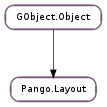

None
None
Bases: GObject.Object
| Parameters: | context (Pango.Context) – a Pango.Context |
|---|---|
| Returns: | the newly allocated Pango.Layout, with a reference count of one, which should be freed with GObject.Object.unref (). |
| Return type: | Pango.Layout |
Create a new Pango.Layout object with attributes initialized to default values for a particular Pango.Context.
Forces recomputation of any state in the Pango.Layout that might depend on the layout’s context. This function should be called if you make changes to the context subsequent to creating the layout.
| Returns: | the newly allocated Pango.Layout, with a reference count of one, which should be freed with GObject.Object.unref (). |
|---|---|
| Return type: | Pango.Layout |
Does a deep copy-by-value of the src layout. The attribute list, tab array, and text from the original layout are all copied by value.
| Returns: | the alignment. |
|---|---|
| Return type: | Pango.Alignment |
Gets the alignment for the layout: how partial lines are positioned within the horizontal space available.
| Returns: | a Pango.AttrList. |
|---|---|
| Return type: | Pango.AttrList |
Gets the attribute list for the layout, if any.
| Returns: | True if the bidirectional base direction is computed from the layout’s contents, False otherwise. |
|---|---|
| Return type: | bool |
Gets whether to calculate the bidirectional base direction for the layout according to the contents of the layout. See Pango.Layout.set_auto_dir ().
| Returns: | baseline of first line, from top of layout. |
|---|---|
| Return type: | int |
Gets the Y position of baseline of the first line in layout.
| Returns: | the number of Unicode characters in the text of layout |
|---|---|
| Return type: | int |
Returns the number of Unicode characters in the the text of layout.
| Returns: | the Pango.Context for the layout. This does not have an additional refcount added, so if you want to keep a copy of this around, you must reference it yourself. |
|---|---|
| Return type: | Pango.Context |
Retrieves the Pango.Context used for this layout.
| Parameters: | index_ (int) – the byte index of the cursor |
|---|---|
| Return type: | strong_pos: Pango.Rectangle, weak_pos: Pango.Rectangle |
Given an index within a layout, determines the positions that of the strong and weak cursors if the insertion point is at that index. The position of each cursor is stored as a zero-width rectangle. The strong cursor location is the location where characters of the directionality equal to the base direction of the layout are inserted. The weak cursor location is the location where characters of the directionality opposite to the base direction of the layout are inserted.
| Returns: | the current ellipsization mode for layout. Use Pango.Layout.is_ellipsized () to query whether any paragraphs were actually ellipsized. |
|---|---|
| Return type: | Pango.EllipsizeMode |
Gets the type of ellipsization being performed for layout. See Pango.Layout.set_ellipsize ()
| Return type: | ink_rect: Pango.Rectangle, logical_rect: Pango.Rectangle |
|---|
Computes the logical and ink extents of layout. Logical extents are usually what you want for positioning things. Note that both extents may have non-zero x and y. You may want to use those to offset where you render the layout. Not doing that is a very typical bug that shows up as right-to-left layouts not being correctly positioned in a layout with a set width.
The extents are given in layout coordinates and in Pango units; layout coordinates begin at the top left corner of the layout.
| Returns: | a pointer to the layout’s font description, or None if the font description from the layout’s context is inherited. This value is owned by the layout and must not be modified or freed. |
|---|---|
| Return type: | Pango.FontDescription |
Gets the font description for the layout, if any.
| Returns: | the height, in Pango units if positive, or number of lines if negative. |
|---|---|
| Return type: | int |
Gets the height of layout used for ellipsization. See Pango.Layout.set_height () for details.
| Returns: | the indent in Pango units. |
|---|---|
| Return type: | int |
Gets the paragraph indent width in Pango units. A negative value indicates a hanging indentation.
| Returns: | the new Pango.LayoutIter that should be freed using Pango.LayoutIter.free (). |
|---|---|
| Return type: | Pango.LayoutIter |
Returns an iterator to iterate over the visual extents of the layout.
| Returns: | the justify. |
|---|---|
| Return type: | bool |
Gets whether each complete line should be stretched to fill the entire width of the layout.
| Parameters: | line (int) – the index of a line, which must be between 0 and pango_layout_get_line_count(layout) - 1, inclusive. |
|---|---|
| Returns: | the requested Pango.LayoutLine, or None if the index is out of range. This layout line can be ref’ed and retained, but will become invalid if changes are made to the Pango.Layout. |
| Return type: | Pango.LayoutLine |
Retrieves a particular line from a Pango.Layout.
Use the faster Pango.Layout.get_line_readonly () if you do not plan to modify the contents of the line (glyphs, glyph widths, etc.).
| Returns: | the line count. |
|---|---|
| Return type: | int |
Retrieves the count of lines for the layout.
| Parameters: | line (int) – the index of a line, which must be between 0 and pango_layout_get_line_count(layout) - 1, inclusive. |
|---|---|
| Returns: | the requested Pango.LayoutLine, or None if the index is out of range. This layout line can be ref’ed and retained, but will become invalid if changes are made to the Pango.Layout. No changes should be made to the line. |
| Return type: | Pango.LayoutLine |
Retrieves a particular line from a Pango.Layout.
This is a faster alternative to Pango.Layout.get_line (), but the user is not expected to modify the contents of the line (glyphs, glyph widths, etc.).
| Returns: | a GLib.SList containing the lines in the layout. This points to internal data of the Pango.Layout and must be used with care. It will become invalid on any change to the layout’s text or properties. |
|---|---|
| Return type: | [Pango.LayoutLine] |
Returns the lines of the layout as a list.
Use the faster Pango.Layout.get_lines_readonly () if you do not plan to modify the contents of the lines (glyphs, glyph widths, etc.).
| Returns: | a GLib.SList containing the lines in the layout. This points to internal data of the Pango.Layout and must be used with care. It will become invalid on any change to the layout’s text or properties. No changes should be made to the lines. |
|---|---|
| Return type: | [Pango.LayoutLine] |
Returns the lines of the layout as a list.
This is a faster alternative to Pango.Layout.get_lines (), but the user is not expected to modify the contents of the lines (glyphs, glyph widths, etc.).
| Return type: | attrs: [Pango.LogAttr] |
|---|
Retrieves an array of logical attributes for each character in the layout.
| Returns: | an array of logical attributes |
|---|---|
| Return type: | [Pango.LogAttr] |
Retrieves an array of logical attributes for each character in the layout.
This is a faster alternative to Pango.Layout.get_log_attrs (). The returned array is part of layout and must not be modified. Modifying the layout will invalidate the returned array.
The number of attributes returned in n_attrs will be one more than the total number of characters in the layout, since there need to be attributes corresponding to both the position before the first character and the position after the last character.
| Return type: | ink_rect: Pango.Rectangle, logical_rect: Pango.Rectangle |
|---|
Computes the logical and ink extents of layout in device units. This function just calls Pango.Layout.get_extents () followed by two Pango.extents_to_pixels () calls, rounding ink_rect and logical_rect such that the rounded rectangles fully contain the unrounded one (that is, passes them as first argument to Pango.extents_to_pixels ()).
| Return type: | width: int, height: int |
|---|
Determines the logical width and height of a Pango.Layout in device units. (Pango.Layout.get_size () returns the width and height scaled by Pango.SCALE.) This is simply a convenience function around Pango.Layout.get_pixel_extents ().
| Returns: | The current serial number of layout. |
|---|---|
| Return type: | int |
Returns the current serial number of layout. The serial number is initialized to an small number larger than zero when a new layout is created and is increased whenever the layout is changed using any of the setter functions, or the Pango.Context it uses has changed. The serial may wrap, but will never have the value 0. Since it can wrap, never compare it with “less than”, always use “not equals”.
This can be used to automatically detect changes to a Pango.Layout, and is useful for example to decide whether a layout needs redrawing. To force the serial to be increased, use Pango.Layout.context_changed ().
| Returns: | True if the layout does not break paragraphs at paragraph separator characters, False otherwise. |
|---|---|
| Return type: | bool |
Obtains the value set by Pango.Layout.set_single_paragraph_mode ().
| Return type: | width: int, height: int |
|---|
Determines the logical width and height of a Pango.Layout in Pango units (device units scaled by Pango.SCALE ). This is simply a convenience function around Pango.Layout.get_extents ().
| Returns: | the spacing in Pango units. |
|---|---|
| Return type: | int |
Gets the amount of spacing between the lines of the layout.
| Returns: | a copy of the tabs for this layout, or None. |
|---|---|
| Return type: | Pango.TabArray |
Gets the current Pango.TabArray used by this layout. If no Pango.TabArray has been set, then the default tabs are in use and None is returned. Default tabs are every 8 spaces. The return value should be freed with Pango.TabArray.free ().
| Returns: | the text in the layout. |
|---|---|
| Return type: | str |
Gets the text in the layout. The returned text should not be freed or modified.
| Returns: | The number of unknown glyphs in layout. |
|---|---|
| Return type: | int |
Counts the number unknown glyphs in layout. That is, zero if glyphs for all characters in the layout text were found, or more than zero otherwise.
This function can be used to determine if there are any fonts available to render all characters in a certain string, or when used in combination with Pango.AttrType.FALLBACK, to check if a certain font supports all the characters in the string.
| Returns: | the width in Pango units, or -1 if no width set. |
|---|---|
| Return type: | int |
Gets the width to which the lines of the Pango.Layout should wrap.
| Returns: | active wrap mode. |
|---|---|
| Return type: | Pango.WrapMode |
Gets the wrap mode for the layout.
Use Pango.Layout.is_wrapped () to query whether any paragraphs were actually wrapped.
| Parameters: | |
|---|---|
| Return type: |
Converts from byte index_ within the layout to line and X position. (X position is measured from the left edge of the line)
| Parameters: | index_ (int) – byte index within layout |
|---|---|
| Return type: | pos: Pango.Rectangle |
Converts from an index within a Pango.Layout to the onscreen position corresponding to the grapheme at that index, which is represented as rectangle. Note that pos->x is always the leading edge of the grapheme and pos->x + pos->width the trailing edge of the grapheme. If the directionality of the grapheme is right-to-left, then pos->width will be negative.
| Returns: | True if any paragraphs had to be ellipsized, False otherwise. |
|---|---|
| Return type: | bool |
Queries whether the layout had to ellipsize any paragraphs.
This returns True if the ellipsization mode for layout is not Pango.EllipsizeMode.NONE, a positive width is set on layout, and there are paragraphs exceeding that width that have to be ellipsized.
| Returns: | True if any paragraphs had to be wrapped, False otherwise. |
|---|---|
| Return type: | bool |
Queries whether the layout had to wrap any paragraphs.
This returns True if a positive width is set on layout, ellipsization mode of layout is set to Pango.EllipsizeMode.NONE, and there are paragraphs exceeding the layout width that have to be wrapped.
| Parameters: |
|
|---|---|
| Return type: |
Computes a new cursor position from an old position and a count of positions to move visually. If direction is positive, then the new strong cursor position will be one position to the right of the old cursor position. If direction is negative, then the new strong cursor position will be one position to the left of the old cursor position.
In the presence of bidirectional text, the correspondence between logical and visual order will depend on the direction of the current run, and there may be jumps when the cursor is moved off of the end of a run.
Motion here is in cursor positions, not in characters, so a single call to Pango.Layout.move_cursor_visually () may move the cursor over multiple characters when multiple characters combine to form a single grapheme.
| Parameters: | alignment (Pango.Alignment) – the alignment |
|---|
Sets the alignment for the layout: how partial lines are positioned within the horizontal space available.
| Parameters: | attrs (Pango.AttrList or None) – a Pango.AttrList, can be None |
|---|
Sets the text attributes for a layout object. References attrs, so the caller can unref its reference.
| Parameters: | auto_dir (bool) – if True, compute the bidirectional base direction from the layout’s contents. |
|---|
Sets whether to calculate the bidirectional base direction for the layout according to the contents of the layout; when this flag is on (the default), then paragraphs in layout that begin with strong right-to-left characters (Arabic and Hebrew principally), will have right-to-left layout, paragraphs with letters from other scripts will have left-to-right layout. Paragraphs with only neutral characters get their direction from the surrounding paragraphs.
When False, the choice between left-to-right and right-to-left layout is done according to the base direction of the layout’s Pango.Context. (See Pango.Context.set_base_dir ()).
When the auto-computed direction of a paragraph differs from the base direction of the context, the interpretation of Pango.Alignment.LEFT and Pango.Alignment.RIGHT are swapped.
| Parameters: | ellipsize (Pango.EllipsizeMode) – the new ellipsization mode for layout |
|---|
Sets the type of ellipsization being performed for layout. Depending on the ellipsization mode ellipsize text is removed from the start, middle, or end of text so they fit within the width and height of layout set with Pango.Layout.set_width () and Pango.Layout.set_height ().
If the layout contains characters such as newlines that force it to be layed out in multiple paragraphs, then whether each paragraph is ellipsized separately or the entire layout is ellipsized as a whole depends on the set height of the layout. See Pango.Layout.set_height () for details.
| Parameters: | desc (Pango.FontDescription or None) – the new Pango.FontDescription, or None to unset the current font description |
|---|
Sets the default font description for the layout. If no font description is set on the layout, the font description from the layout’s context is used.
| Parameters: | height (int) – the desired height of the layout in Pango units if positive, or desired number of lines if negative. |
|---|
Sets the height to which the Pango.Layout should be ellipsized at. There are two different behaviors, based on whether height is positive or negative.
If height is positive, it will be the maximum height of the layout. Only lines would be shown that would fit, and if there is any text omitted, an ellipsis added. At least one line is included in each paragraph regardless of how small the height value is. A value of zero will render exactly one line for the entire layout.
If height is negative, it will be the (negative of) maximum number of lines per paragraph. That is, the total number of lines shown may well be more than this value if the layout contains multiple paragraphs of text. The default value of -1 means that first line of each paragraph is ellipsized. This behvaior may be changed in the future to act per layout instead of per paragraph. File a bug against pango at http://bugzilla.gnome.org/ if your code relies on this behavior.
Height setting only has effect if a positive width is set on layout and ellipsization mode of layout is not Pango.EllipsizeMode.NONE. The behavior is undefined if a height other than -1 is set and ellipsization mode is set to Pango.EllipsizeMode.NONE, and may change in the future.
| Parameters: | indent (int) – the amount by which to indent. |
|---|
Sets the width in Pango units to indent each paragraph. A negative value of indent will produce a hanging indentation. That is, the first line will have the full width, and subsequent lines will be indented by the absolute value of indent.
The indent setting is ignored if layout alignment is set to Pango.Alignment.CENTER.
| Parameters: | justify (bool) – whether the lines in the layout should be justified. |
|---|
Sets whether each complete line should be stretched to fill the entire width of the layout. This stretching is typically done by adding whitespace, but for some scripts (such as Arabic), the justification may be done in more complex ways, like extending the characters.
Note that this setting is not implemented and so is ignored in Pango older than 1.18.
| Parameters: |
|---|
Same as Pango.Layout.set_markup_with_accel (), but the markup text isn’t scanned for accelerators.
| Parameters: | |
|---|---|
| Return type: | accel_char: unicode |
Sets the layout text and attribute list from marked-up text (see markup format). Replaces the current text and attribute list.
If accel_marker is nonzero, the given character will mark the character following it as an accelerator. For example, accel_marker might be an ampersand or underscore. All characters marked as an accelerator will receive a Pango.Underline.LOW attribute, and the first character so marked will be returned in accel_char. Two accel_marker characters following each other produce a single literal accel_marker character.
| Parameters: | setting (bool) – new setting |
|---|
If setting is True, do not treat newlines and similar characters as paragraph separators; instead, keep all text in a single paragraph, and display a glyph for paragraph separator characters. Used when you want to allow editing of newlines on a single text line.
| Parameters: | spacing (int) – the amount of spacing |
|---|
Sets the amount of spacing in Pango unit between the lines of the layout.
| Parameters: | tabs (Pango.TabArray or None) – a Pango.TabArray, or None |
|---|
Sets the tabs to use for layout, overriding the default tabs (by default, tabs are every 8 spaces). If tabs is None, the default tabs are reinstated. tabs is copied into the layout; you must free your copy of tabs yourself.
| Parameters: |
|---|
Sets the text of the layout.
Note that if you have used Pango.Layout.set_markup () or Pango.Layout.set_markup_with_accel () on layout before, you may want to call Pango.Layout.set_attributes () to clear the attributes set on the layout from the markup as this function does not clear attributes.
| Parameters: | width (int) – the desired width in Pango units, or -1 to indicate that no wrapping or ellipsization should be performed. |
|---|
Sets the width to which the lines of the Pango.Layout should wrap or ellipsized. The default value is -1: no width set.
| Parameters: | wrap (Pango.WrapMode) – the wrap mode |
|---|
Sets the wrap mode; the wrap mode only has effect if a width is set on the layout with Pango.Layout.set_width (). To turn off wrapping, set the width to -1.
| Parameters: | |
|---|---|
| Returns: | |
| Return type: |
Converts from X and Y position within a layout to the byte index to the character at that logical position. If the Y position is not inside the layout, the closest position is chosen (the position will be clamped inside the layout). If the X position is not within the layout, then the start or the end of the line is chosen as described for pango_layout_x_to_index(). If either the X or Y positions were not inside the layout, then the function returns False ; on an exact hit, it returns True.